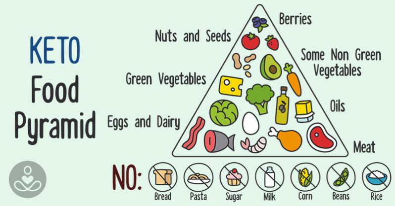
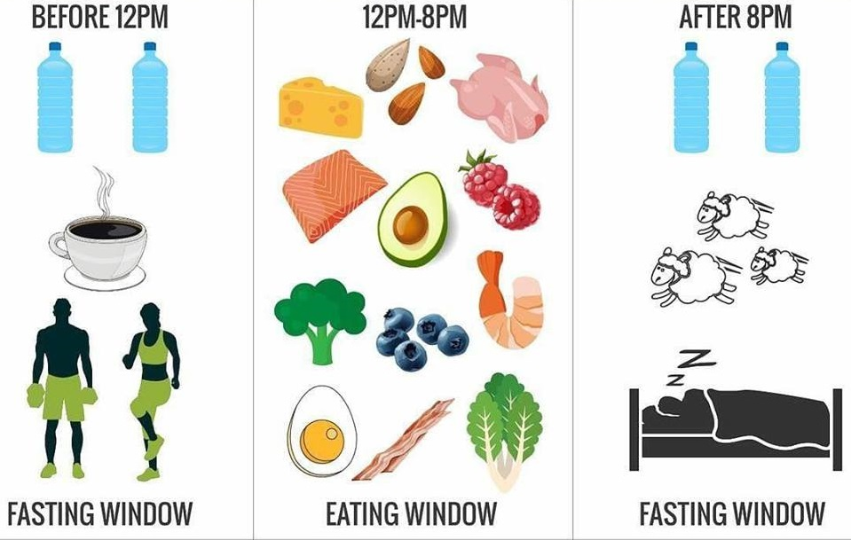

A balanced diet and physical activity are vital.
A healthy diet has a direct link to increased cognitive function, memory skills,
and improved mood.
Ketogenic Diet
The ketogenic diet is a very low-carb, high-fat diet that
shares many similarities with the Atkins and low-carb diets.
It involves drastically reducing carbohydrate intake and
replacing it with fat. This reduction in carbs puts your
body into a metabolic state called ketosis.
When this happens, your body becomes incredibly efficient
at burning fat for energy. It also turns fat into ketones
in the liver, which can supply energy for the brain.
Ketogenic diets can cause massive reductions in blood sugar
and insulin levels. This, along with the increased ketones,
has numerous health benefits.


Intermittent fasting
Intermittent fasting is an eating pattern that cycles between periods of fasting and eating.
It doesn’t specify which foods you should eat but rather when you should eat them.
In this respect, it’s not a diet in the conventional sense but more accurately described as an eating pattern.
Common intermittent fasting methods involve daily 16-hour fasts or fasting for 24 hours, twice per week.
Fasting has been a practice throughout human evolution. Ancient hunter-gatherers didn't have supermarkets, refrigerators or food available year-round. Sometimes they couldn't find anything to eat.
As a result, humans evolved to be able to function without food for extended periods of time.
In fact, fasting from time to time is more natural than always eating 3–4 (or more) meals per day.
We also provide customized diet plans. Click the button below to request a customized plan for you

User Login
Admin Login